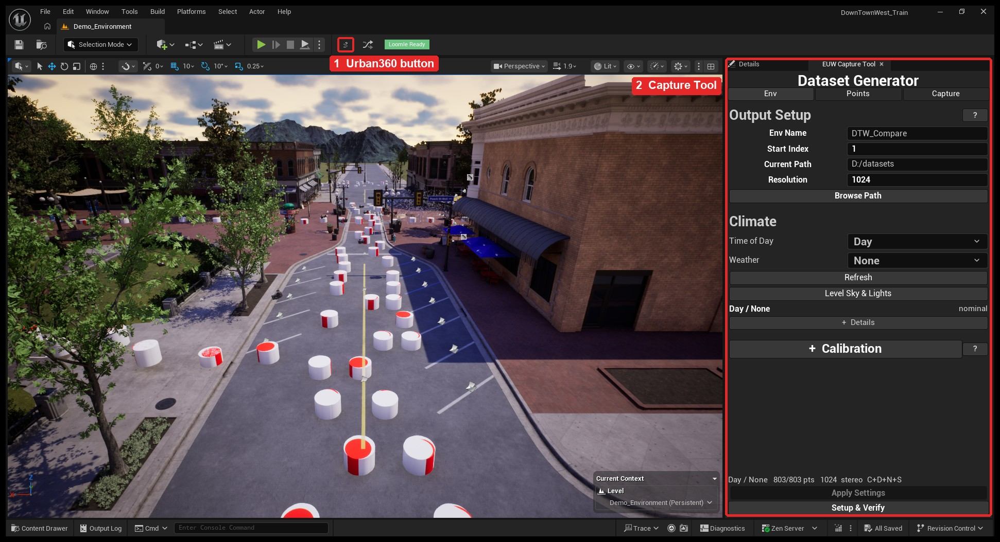
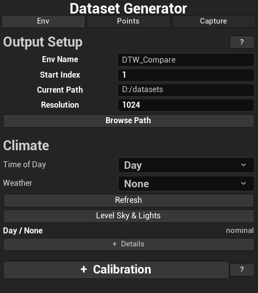
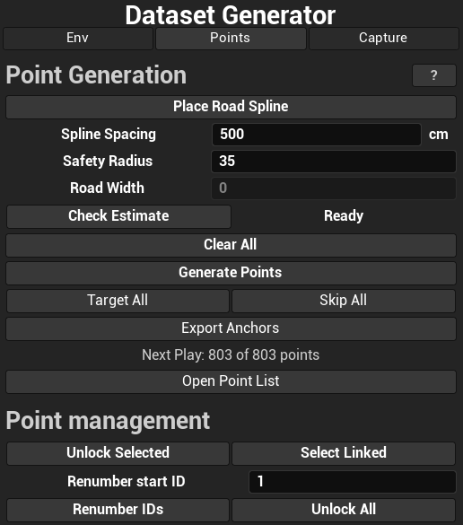
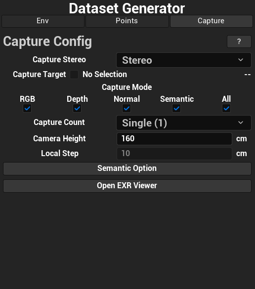

Drag to look around · scroll to zoom
Loading the capture…
Output folder
Manifest
One row per capture position. Position is in metres and rotation is a unit quaternion, both in the computer-vision camera convention.
Raw CSV
In the Unreal Editor
The simulator mirrors the real tool. These are screenshots of it in the DTW level.




About this demo
- The page plays back captures that were made with the plugin. It does not run Unreal Engine, and nothing is rendered in the browser.
- All images come from one point, 000742, of the DTW level, captured in stereo at 1024 × 512 per eye. The viewer shows the left eye.
- Only daytime captures are included. The plugin also captures at night with the same four weathers.
- Depth, Normal and Semantic do not depend on the weather: across the four captures of this point the semantic image is identical and fewer than 0.01 % of the depth pixels differ by more than 1 % (leaves moving between runs). The demo therefore shows one set for all four.
- The real Color, Depth and Normal files are 16-bit floating-point EXR. Here Color is converted to sRGB, and Depth and Normal are colored for display; the read-outs under the cursor give the stored values (depth to the centimetre).
- Fields that only make sense in the editor, such as Resolution or Spline Spacing, are shown but fixed.